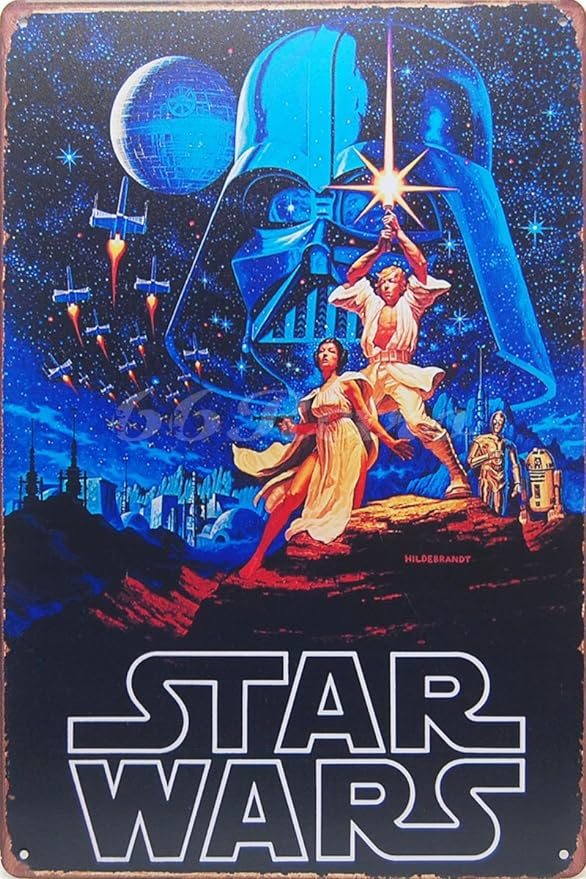
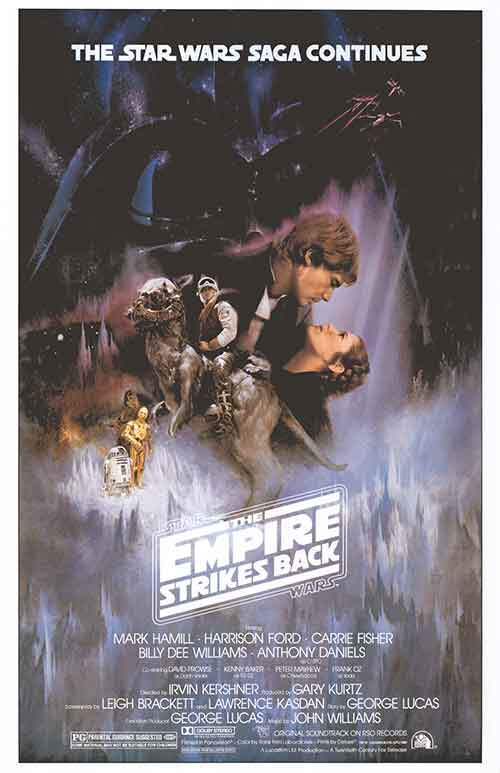
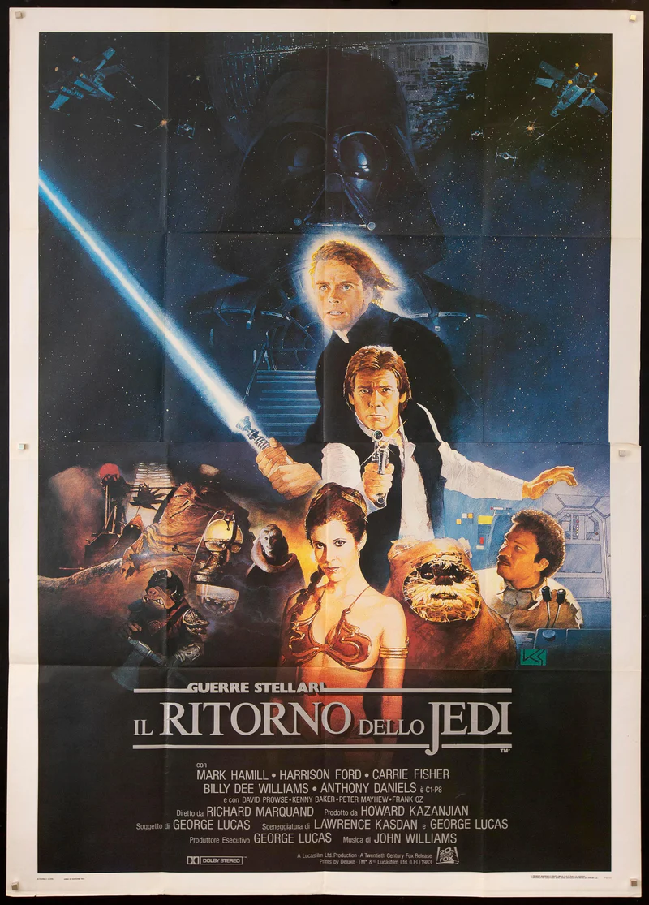

 Star Wars IV - A New Hope....The Imperial Forces -- under orders from cruel Darth Vader (David Prowse) -- hold Princess Leia (Carrie Fisher) hostage, in their efforts to quell the rebellion against the Galactic Empire. Luke Skywalker (Mark Hamill) and Han Solo (Harrison Ford), captain of the Millennium Falcon, work together with the companionable droid duo R2-D2 (Kenny Baker) and C-3PO (Anthony Daniels) to rescue the beautiful princess, help the Rebel Alliance, and restore freedom and justice to the Galaxy.
 Star Wars V - The Empire Strikes Back...The adventure continues in this "Star Wars" sequel. Luke Skywalker (Mark Hamill), Han Solo (Harrison Ford), Princess Leia (Carrie Fisher) and Chewbacca (Peter Mayhew) face attack by the Imperial forces and its AT-AT walkers on the ice planet Hoth. While Han and Leia escape in the Millennium Falcon, Luke travels to Dagobah in search of Yoda. Only with the Jedi master's help will Luke survive when the dark side of the Force beckons him into the ultimate duel with Darth Vader (David Prowse).
 Star Wars VI - Return of the Jedi....Luke Skywalker (Mark Hamill) battles horrible Jabba the Hut and cruel Darth Vader to save his comrades in the Rebel Alliance and triumph over the Galactic Empire. Han Solo (Harrison Ford) and Princess Leia (Carrie Fisher) reaffirm their love and team with Chewbacca, Lando Calrissian (Billy Dee Williams), the Ewoks and the androids C-3PO and R2-D2 to aid in the disruption of the Dark Side and the defeat of the evil emperor.